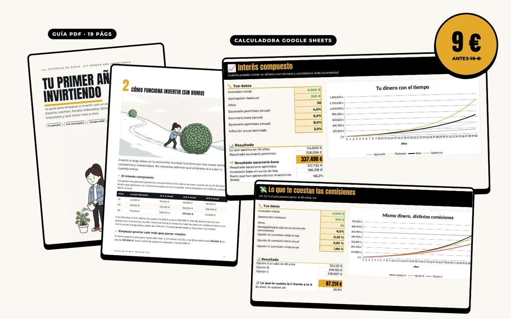
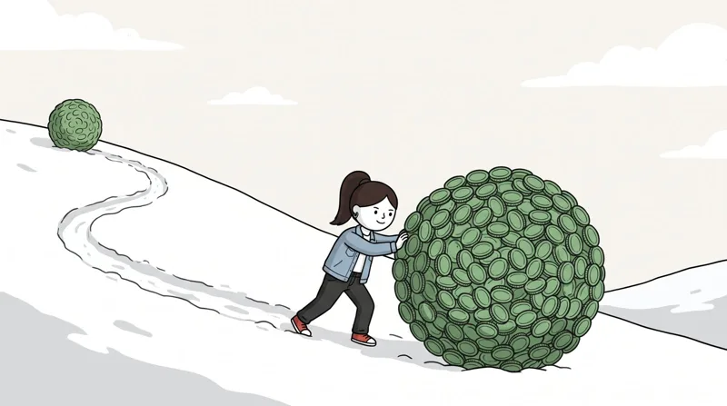
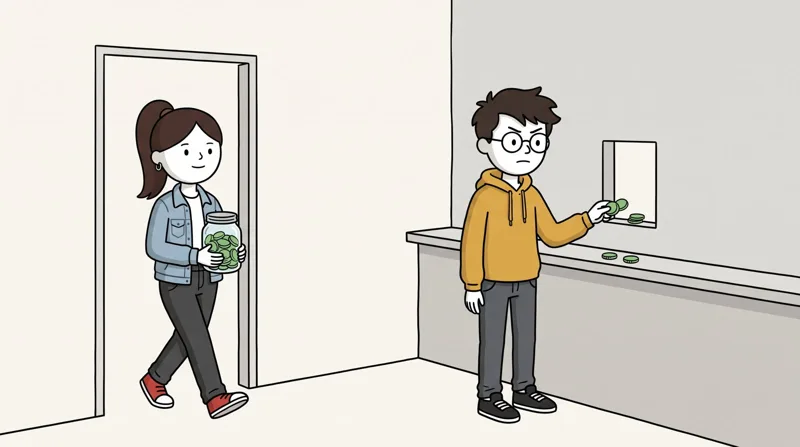
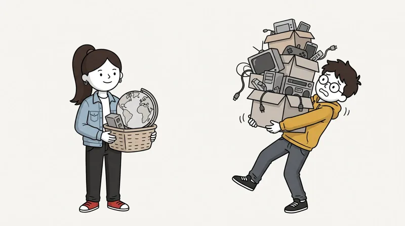
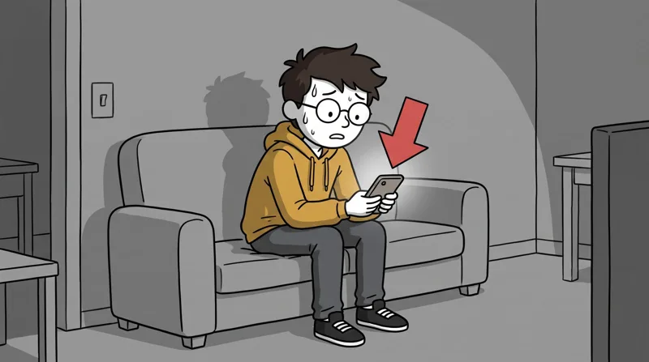
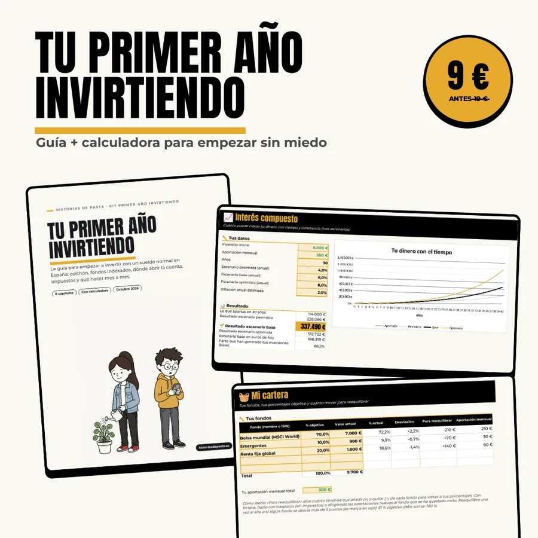

Tu primer año invirtiendo
Qué hacer antes de invertir, qué fondos elegir, dónde abrir la cuenta y cómo pagar menos impuestos. Mes a mes, sin humo y para gente con sueldo normal en España.

El problema
Invertir no es difícil. Equivocarse al empezar, sí.
puedes tener a los 30 años empezando con 6.000 € y 300 € al mes, al 6 % anual. Tú habrás puesto 114.000 €.
se quedan por el camino con un fondo típico de banco al 1,8 % frente a un indexado al 0,2 %.
te cuesta, en el mismo ejemplo, esperar 5 años para «aprender más» antes de empezar.
Ejemplos educativos con rentabilidades supuestas. No garantizan resultados futuros.
Qué incluye
Dos piezas que van juntas
📘 La guía (PDF, 19 páginas)
Ilustrada con Dani y María. Cada capítulo termina con lo que hizo Dani (lo que no debes hacer) y lo que hizo María (lo que sí).
- Antes de invertir: colchón, deudas y plazo
- Cómo funciona invertir, sin humo
- Fondos o ETFs: la ventaja del traspaso
- Dónde abrir la cuenta: comparativa neutral
- Tu primera cartera: uno, dos o tres fondos
- Impuestos sin dolor: base del ahorro y Modelo 720
- Tu primer año, mes a mes
- Los 10 errores de Dani
📊 La calculadora (Google Sheets)
Haces una copia en tu Google Drive y metes tus números. Si prefieres Excel, puedes descargarla desde Google Sheets.
- Listo: colchón, deudas y cuánto puedes invertir de verdad.
- Interés compuesto: cuánto puede crecer tu dinero en tres escenarios, también en euros de hoy.
- Coste de comisiones: lo que te cuesta un fondo caro frente a uno barato.
- Mi cartera: tus porcentajes objetivo y cuánto mover para reequilibrar.
- Impuestos al vender: tramos de 2026 y fondo con traspaso frente a ETF.
- Plan del primer año: checklist mes a mes.
Por dentro
Así es la guía




Es para ti si…
- Tienes ahorros parados en el banco y no sabes por dónde empezar.
- Has oído hablar de fondos indexados pero no te atreves a dar el paso.
- Quieres invertir poco a poco, cada mes, sin vigilar la bolsa.
- Te lía la parte de impuestos y no quieres llevarte sustos con Hacienda.
- Prefieres algo aburrido que funcione a algo emocionante que no.
No es para ti si…
- Buscas que te digamos qué fondo o qué plataforma contratar. Es educación, no asesoramiento.
- Quieres hacer trading, cripto o acciones sueltas para ganar rápido.
- Ya llevas años invirtiendo con una cartera de indexados.
Preguntas frecuentes
Antes de comprar
¿Cómo lo recibo?
Justo después de pagar llegas a la página de descarga: la guía en PDF y el enlace para copiar la calculadora en tu Google Drive. El enlace también aparece en la confirmación de compra.
¿Cuánto dinero necesito para empezar?
Muy poco: en muchos fondos indexados el mínimo es de 1 o 10 €, y puedes programar una aportación mensual pequeña. Lo importante es tener antes tu colchón de emergencia, y la guía te enseña a calcularlo.
¿Necesito saber de hojas de cálculo?
No. Solo cambias las casillas amarillas (tus ahorros, tu aportación, las comisiones) y el resto se calcula solo.
¿Los datos están actualizados?
Sí, a octubre de 2026: tramos de la base del ahorro de 2026, fiscalidad de traspasos y ETFs, y comisiones y mínimos de las plataformas más usadas en España.
¿Me decís qué fondo o qué plataforma elegir?
No. Te enseñamos a comparar comisiones, mínimos y fiscalidad para que decidas tú. No recomendamos fondos, plataformas ni productos concretos, ni cobramos de ninguna.
¿Y si no me sirve?
Escríbenos a kikotajada@gmail.com en los 14 días siguientes a la compra y lo hablamos.

Empieza bien desde el primer euro
Por menos de lo que pagas en comisiones en un mes con un fondo caro, sabrás qué hacer con tu dinero durante todo tu primer año.
Comprar el kit · 19 €Contenido educativo. No es asesoramiento financiero ni fiscal. Invertir implica riesgo de pérdida.